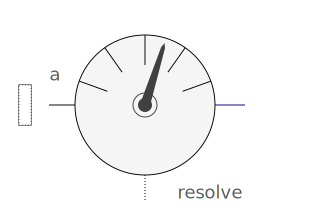
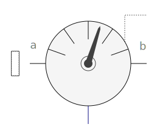
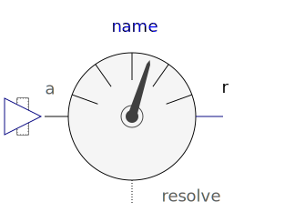
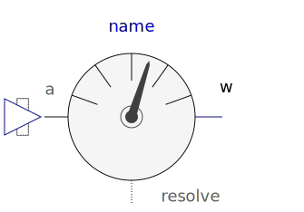
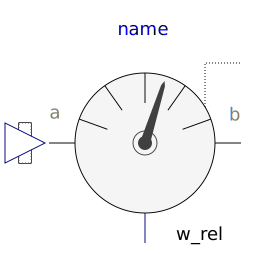
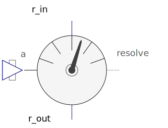
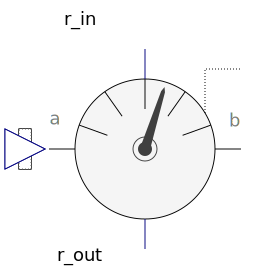
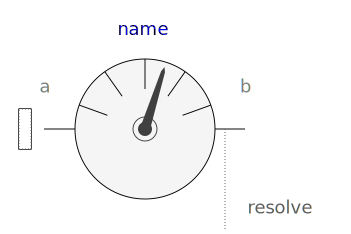
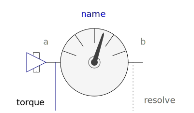

Internal package, should not be used by user
| Name | Description |
|---|---|
|
|
Partial absolute sensor model for sensors defined by components |
|  PartialAbsoluteBaseSensor | Partial absolute sensor models for sensors defined by equations (frame_resolve must be connected exactly once) |
|
|
Partial relative sensor model for sensors defined by components |
|  PartialRelativeBaseSensor | Partial relative sensor models for sensors defined by equations (frame_resolve must be connected exactly once) |
|  BasicAbsolutePosition | Measure absolute position vector (same as Sensors.AbsolutePosition, but frame_resolve is not conditional and must be connected) |
|  BasicAbsoluteAngularVelocity | Measure absolute angular velocity |
|
|
Measure relative position vector (same as Sensors.RelativePosition, but frame_resolve is not conditional and must be connected) |
|  BasicRelativeAngularVelocity | Measure relative angular velocity |
|  BasicTransformAbsoluteVector | Transform absolute vector in to another frame |
|  BasicTransformRelativeVector | Transform relative vector in to another frame |
|
|
Set force and torque to zero |
|  PartialCutForceSensor | Base model to measure the cut force and/or torque between two frames, defined by components |
| PartialCutForceBaseSensor | Base model to measure the cut force and/or torque between two frames, defined by equations (frame_resolve must be connected exactly once) |
| BasicCutForce | Measure cut force vector (frame_resolve must be connected) |
|  BasicCutTorque | Measure cut torque vector (frame_resolve must be connected) |